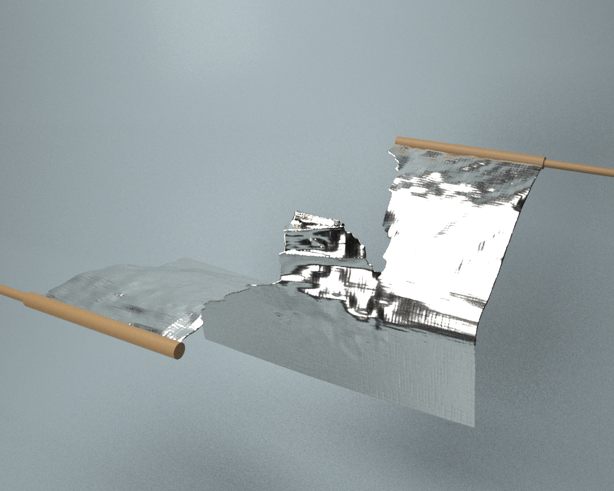

|

|
|
Abstract:
We propose a Lagrangian particle-based formulation for simulating deformation, fracture, and diffusion in thin membrane-like structures, such as aluminium foil, rubbery films, and seaweed flakes. We integrate our model with diffusion processes and derive a unified framework for simulating deformation-diffusion coupled phenomena, which is applied to provide realistic heterogeneity induced by the diffusion process to fracture patterns. To the best of our knowledge, our work is the first to simulate the complex fracture patterns of single-layered membranes in computer graphics and introduce heterogeneity induced by the diffusion process, which generates more geometrically rich fracture patterns. Our end-to-end 3D simulations show that our deformation-diffusion coupling framework captures detailed fracture growth patterns in thin membranes due to both in-plane and out-of-plane motions, producing realistically wrinkled slit edges, and heterogeneity introduced due to diffusion.
|

![[PHOTO]](../../images/knight_small.png)